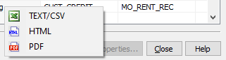
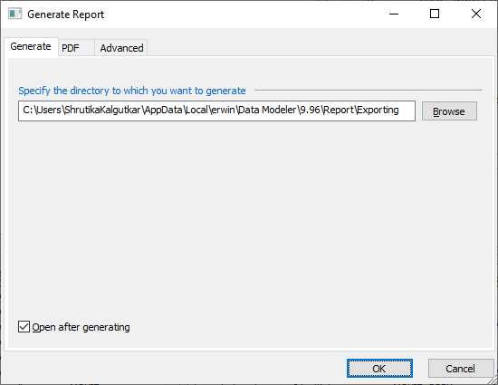

You can generate reports of the information displayed in the Object Browser in CSV, HTML, and PDF formats. You can then use or share these reports.
To generate reports, follow these steps:
On the Object Browser, click Generate Report.

Select the report format.
The Generate Report dialog box appears.

The available tabs and properties depend on the report format.
Set the necessary report properties. Refer to the following table for property descriptions.
|
Tab |
Property |
Description | Additional Information |
| Generate | Location | Specifies the location where the generated reports will be saved | |
|
Summary Entity Report View Report Index Report Relationship Report |
Specifies the reports to be generated |
Available only when the report format is Text/CSV | |
| Open after generating | Specifies whether the report should be opened once generated | ||
|
Customize Report Details |
Specifies the section titles and content appearance of the report |
Available only when the report format is PDF Available only when the report format is PDF |
|
| Advanced |
Report Logo |
Specifies the logo to be used in the report |
|
| Logo Position | Specifies the location of the logo in the report | ||
| Alignment | Specifies the logo's alignment | ||
| Custom Report | Specifies whether the report uses custom colors for the Diagram Header, Row/Column Title, and Table Headers | ||
| Select ER Diagram Format | Specifies the ER diagram's file format | ||
| Page Size | Specifies the reports page size setting | ||
| HTML |
Report Template |
Specifies the template to be used to generate the report |
Available only when the report format is HTML |
| Customize Report Details | Specifies the report's sections, section content, and section definition | ||
| Text/CSV | Text Qualifier | Specifies the text qualifier character to be used to identify cell or text field contents | Available only when the report format is Text/CSV |
| Delimiters | Specifies the delimiter to be used |